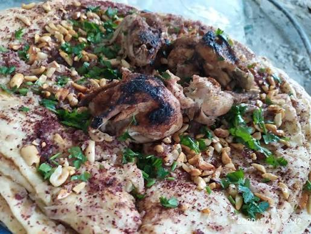

Msakhan

Description:
Msakhan is a cherished Palestinian dish celebrated for its rich, aromatic flavors and simple, heartwarming ingredients.
It features tender roasted chicken served over flatbread that has been soaked in warm,
sumac-infused olive oil and topped with caramelized onions and toasted pine nuts.
Traditionally baked in a wood-fired oven, this iconic dish is packed with tangy and savory notes from the generous use of sumac and olive oil.
It is usually served family-style with plain yogurt or a simple fresh salad on the side.
Ingredients:
- 1 kg chicken pieces
- 4 large onions (sliced into thin half-moons)
- 4 to 5 Taboon flatbreads (or thick pita breads)
- 1/2 cup extra virgin olive oil
- 3 to 4 tbsp ground sumac
- 1 tsp ground cumin
- 1/2 tsp ground allspice
- Salt and black pepper to taste
- 1/4 cup pine nuts or sliced almonds (toasted)
Steps:
- Season chicken with salt, pepper, a tablespoon of sumac, cumin, and allspice, then roast or boil until cooked through and golden.
- Heat the olive oil in a large skillet over medium-low heat, add the sliced onions, and cook slowly until soft and translucent without letting them brown.
- Stir the remaining sumac, salt, and pepper into the softened onions until well combined, then remove from heat.
- Dip each piece of flatbread into the warm olive oil from the onion skillet, then spread a generous layer of cooked sumac-onions over the top of the bread.
- Place the onion-covered flatbreads on baking sheets and arrange the cooked chicken pieces on top of the bread.
- Bake in a preheated oven at 200°C (400°F) for 8 to 10 minutes until the edges of the bread are crispy and the chicken is warmed through.
- Garnish with toasted pine nuts and serve hot with extra sumac and fresh yogurt.
Home